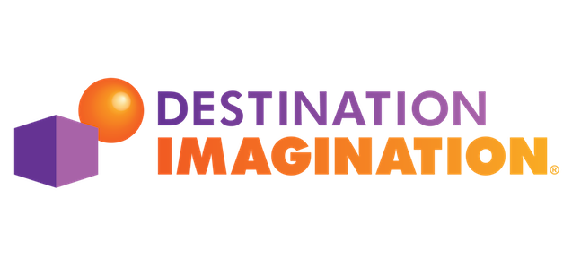

I am
"Growing up with a doctor as my parent, I spent many hours roaming the halls and rooms of the hospital. The smell of disinfectant was the scent of my childhood. The sight of needles and patients with all kind of illness were just familiar sights of my normal days. Having spent so many hours of my life in the hospital, I naturally feel a strong sense of belonging there. And further inspired by the healing miracles, I was determined to have a career in the medical field..."
From How My Life has Shaped My Dreams and Aspirations
MotivatedKeen-Insight
InventiveOut-going
NotableOptimistic
Supportive
Enterprising
Open-minded
Knowledgeable
I am Minseok Koo, who is a junior Bio/Biomedical engineering student at University of Pittsburgh. Especially, my studies are concentrated in the fields of Bioimaging and Signals where my interest in Biomedical Imaging Modalities can be met.
After graduation, my plan is to either go to Korean medical school or move on to PhD program to learn more deeply about bioimaging. The ideal goal of mine is to attain both MD and PhD in Bioimaging field in order to fulfill my dream of becoming a specialist in radiology. After that, I want to either work for industries or become a research professor.
(But who knows? My Life can vary from my goals)
I enjoy computer programming, brainstorming, problem solving, crafting, inventing, planning&designing, drawing, singing and playing instruments.
I just love creating and making new things so much!!!
SKILLS AND ABILITIES
MatLab
Java
C++
XML
Python
SolidWorks
Data Analysis
JavaScript
CSS
HTML
DICOM Structured Report Interpretation
Powerpoint Presentation
Teamwork
Creativity
Decision Making
Problem Solving
Communication
Languages: English & Korean (both native)
Please feel free to contact me via
Educational Background
Currently Enrolled in University of Pittsburgh, PA
Expected Graduation Date: April 2019
Major: Bio/Biomedical Engineering (Bioimaging & Signals Concentration)
Study Abroad Korea University / Seoul, South Korea / Summer 2016 / 6 credit hours
Missouri Academy of Science, Mathematics and Computing
Graduation Date: May 2015
Early-entrance-to-college high school
All courses were taken at Northwest Missouri State University
Number of Credit Hours Received: 74 credit hours (44 credit hours transferred to Pitt)
Associate of Science Degree received on May 2015
▶ For more details about Missouri Academy, check out the School Profile
Also, check out my awesome Experiences!
Work & Research Experiences
1 / 2

2 / 2

❮
❯
Internship, Siemens Healthineers Ltd. 2017.03 - 2017.09
Application Software Team
Supported the ultrasound system software development and tested software functionality and workflow
Developed a Parameter Container Generator software for the ultrasound system utilizing YAML and C++
Interpreted DICOM Structure Report and verified the accuracy of mappings via utilizing xml and rep files
Managed Application Software Team's assets and took responsibility for general accountings
Undergraduate Research 2017.03 - 2017.09
7 Tesla Human MRI Research Lab, University of Pittsburgh
Supported the development of a MatLab Software for 7T MRI Multi-Channel RF Coils Optimization
Co-author of two research papers
Awards & Honors
Membership Certificate, Mensa International
2017
Mensa is the largest and oldest high IQ society in the world
Perfect Score in Mensa Admission Test (IQ Score: 156 / Percentile: 99 %) and joined Mensa
1st Place in 4 Subjects: Science Olympiad Competition, Missouri
2014, 2015
Year 2014: 1st Place in Chemistry Lab, MagLev
Year 2015: 1st Place in Fossils, Bungee Drop
Great Plains Mathematics League (GPML) Regional Competition
2013
1st Place in Team Round: This is a ten question, twenty minute test which a team of up to six works on together.
1st Place in Sprint Round: In this individual test, students have sixty minutes to complete 30 multiple choice questions.
2nd Place in Relay Round: For this event students arrange themselves into teams of up to three.
3rd Place in Target Round: Individual event consisting of eight questions, each worth 10 points.
1st Place, Seoul Science Park Gifted Education Center Research Competition
2012
Researched “The Continuity of Plant Vessels by observing and comparing botanical specimens”
Principal's Honor: 1st Place in Music Subject, Dankook High School
2012
Ranked #1 in Music subject among 576 students in Dankook High School
Superintendent of Education Honor,
Sejong Science High School Advanced Class of Invention
2011
Received advanced education on concept & craft invention, electronic circuits and scientific experiments
Superintendent of Education Honor is the best possible honor for students to achieve in South Korea
Superintendent of Education Award,
Seoul Creative Product Competition (Computer Programming)
2010
Developed a periodic table program that shows chemical formula when user clicks on desired elements in a reaction
National Representative of Korea,
Destination Imagination Global Finals
2010
Participated in the world’s largest celebration of creativity where students compete on their challenge solutions
Earned the Certificate of Excellence in Creativity, Teamwork and Problem Solving
Extracurricular Activities

Instructor: Basic Life Support (BLS) for Health Care, American Heart Association
2017.10. - current
Instructor ID:
Training Center: Center for Emergency Medicince
Active Member: Pittsburgh Student Emergency Medical Services
2015.09. - current
Learned pre-hospital care and emergency medicine through skills labs and lectures from EMS providers
Received Federal Emergency Management Agency Certificate of Achievement, Emergency Management Institute
Residential Life Committee President, Missouri Academy Student Government
2014.05. - 2015. 04.
Responsible to work for the improvement of students' quality of Missouri Academy Life
President: Missouri Academy Science Journal Club
2013.08. - 2014.05.
Organized the design and layouts, and modified the journal as the final editor
Published in-campus science journal
Student Representative: Seoul Science Park Gifted Education Center
2012.03. - 2012.11.
Qualified as one of the sixty science-talented students above all 10th grade students (91,046 students) in Seoul
Participated in challenging educational opportunities through various experiments, researches and counselings
First Year Representative: Dankook High School Science Research Club
2012.03. - 2013.03.
Had a year long research and held a Scientific Research Exhibition targeting the whole school students
Assisted the club president, spreaded all the announcements to the whole 11th grade students, leaded on the preparation of the Scientific Research Exhibition, and hosted the presentations during the Exhibition
Honor Student: Sejong Science High School Advanced Class for Invention
2011.9. - 2011.11.
A special opportunity which the Seoul Superintendent of Education supervised in order to receive specialized and advanced education in the fields of invention
Qualified as one of the fourty students above all the 7, 8, 9th grade students(330,219 students) in Seoul
Learned Conceptual Invention, Creative Problem Solving, Craft Invention, Electronic Circuits and Scientific Experiments
Class President: Aju Middle School and Dankook High School
2010.03. - 2011. 08.
Encouraged classmates to improve the class environment for higher academic pursuit
Publications
1 / 2

2 / 2

❮
❯
64-channel Double-Octagon Tx Head Coil for 7T Imaging
Published on the International Society of Magnetic Resonance in Medicine
Publication date: Apr 20, 2017
This work presents the design of a 64-channel double-rowed head coil (16 octagons with 4 Tx channels on each octagon). The magnetic field (B1+) and the specific absorption rate (SAR) generated by the new coil were then compared with the TEM and 16-channel Tic Tac coils using Finite-Difference Time Domain (FDTD) simulations. Preliminary data shows significant improvements in all of performance parameters: coefficient of variation (CV) = 14.9% ( field distribution) and maximum/minimum (Max/Min) = 2.45 ( field intensity) across the whole head above and including the cerebellum; and peak/average SAR = 4.97/1.51 W/Kg/10g.
Authorship: Tales Santini, Narayanan Krishnamurthy, Sossena Wood, Shailesh Raval, Yujuan Zhao, Anthony Fischetti, Minseok Koo, Howard Aizenstein, and Tamer Ibrahim
See ISMRM website
See publication

New optimization strategies for RF shimming at UHF MRI
Submitted on the International Society of Magnetic Resonance in Medicine
Waiting for Approval & Publication
Authorship: Tales Santini, Sossena Wood, Narayanan Krishnamurthy, Yutong Zhang, Nadim Farhat, Neilesh Vinjamuri, Minseok Koo, Howard Aizenstein, and Tamer S. Ibrahim
Life Story
How My Life has Shaped My Dreams and Aspirations...
Growing up with a doctor as my parent, I spent many hours roaming the halls and rooms of the hospital. The smell of disinfectant was the scent of my childhood. The sight of needles and patients with all kind of illness were just familiar sights of my normal days. Having spent so many hours of my life in the hospital, I naturally feel a strong sense of belonging there. And further inspired by the healing miracles, I was determined to have a career in the medical field.
With all the interests in the medical field, my life was always revolved around science. In fact, my life is somewhat every scientific. Every school year, I would set a specific goal to reach a certain grade percentile in the class, for example to reach between the top 1% percentiles, and I did achieve all my goals.
As for the academic subjects, my first favorite class was computer programming. I was very into learning about computer and its language that I was recruited by the Computer Science Education Gifted Center during eighth grade. At the center, I took advance programming courses and created my own program using SQL and Visual Basic that was designed to help students learn chemistry by showing chemical formula when the users click on elements they want in a reaction.
After my brief experience at the center, I was recruited by Seoul Science Park Gifted Education Center which provided me with even more advance science and mathematics courses. Then, I came to the United States and graduated Missouri Academy, an early-entrance-to-college-school where all classes were taught in college and concentrated in STEM field.
All these experiences solidified my interest in engineering and shaped my education approach. Specifically, I wanted to combine my interest in the medical field with engineering. It simply concluded that Biomedical Engineering was the perfect path, and this led me to attend University of Pittsburgh’s BME program.
At University of Pittsburgh, I am currently developing a software for Multi-Channel RF Coils optimization at the 7 Tesla Human Magnetic Resonance Imaging Research Lab. Here, I also had an utter privilege to become a co-author of a research paper published at the International Society for Magnetic Resonance in Medicine. In addition, I had an opportunity to work at the leading global healthcare company, Siemens Healthineers, during the Summer.
It may seem like my life has been carefully planned, and yes, I agree. The reason for it is simple: I am determined to achieve my dream of being the most authoritative radiologist and a biomedical engineer. My future plan is to attend Korean Medical School after graduation and achieve Doctor of Medicine. After attaining MD, my dream is to attend MIT’s Biomedical Engineering PhD program and either go into biomedical industries or become a radiology professor. Eventually, my final goal is to become the first Korean ever to achieve Novel Medicine Prize. This dream of mine is the culmination of all my experiences and thus, one of my strongest motivations.
Back to "I Am..." Page